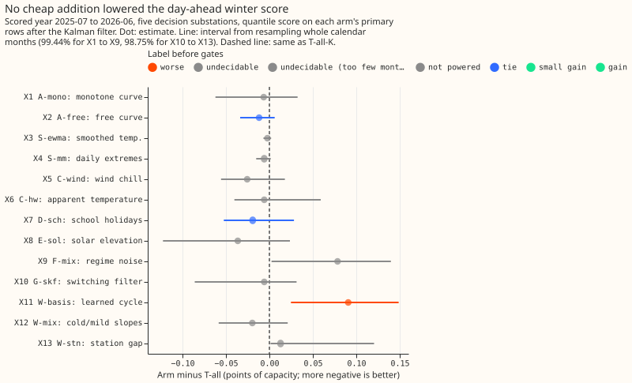
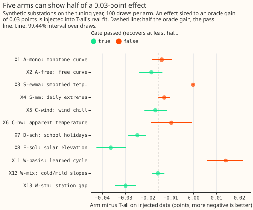

Differentiable physics, S1: do cheap additions to GAM-K lower the day-ahead score?
Take-home: no cheap addition showed a gain we can trust. Of thirteen screens (nine in the first
family, four exploratory), none earned the label gain. Seven were undecidable (the interval was
wider than the margin, or too few calendar months were available to resample), two were tie
(A-free and D-sch), two were not powered (S-ewma and S-mm, whose gate failed), one was worse
(W-basis), and G-skf is inconclusive. The result narrows the search to E-sol on a larger row set
and rules out a learned year cycle as a forecast term. Past weather was used throughout, so every
number is a ceiling for ENS weather. Verdict: inconclusive.
The question was whether adding one cheap term to T-all-K (experiment 114's day-ahead model with the Kalman filter) lowers the quantile score on November-to-March rows. The scored year is 2025-07 to 2026-06 on five decision substations, with the penalty weight (1.0) taken from experiment 114 and the filter re-tuned per arm on the tuning year.


Checks
- Median minus mean forecast (T-all-K, per site): 0.0 at all five substations, because the residual spread is centred.
- Mean-forecast error beside each contrast: the sign of the mean absolute error of the mean forecast matches the sign of the quantile-score contrast for all thirteen screens.
- Triggers fired: trigger 1 (a control failed): G-skf's power gate failed (it recovered the regime on 98% of half-hours but its state error was 0.38 above the plain filter's, interval -1.9 to +6.1), and W-basis's injected-effect gate moved the wrong way. Trigger 2: F-mix predicted tails moving towards nominal and the cold-snap score within noise, and got +0.078 points. An Opus audit ran (a fresh Opus agent, findings below). Triggers 3 to 7 did not fire (no leave-one-out run was needed, because no contrast is a gain).
- Reproduction: B0 equals
fit_gamto 3e-13, T-all equals experiment 114's stored scored-year forecast to 1e-4 points, and every appending arm with zeroed columns equals T-all to 1e-11 points.
Audit findings and triage
- Intervals resample only 3 to 6 calendar months, so at 99.44% the bounds are close to the
smallest and largest month means. Accepted: X9 (F-mix) and X13 (W-stn) are relabelled
undecidable (too few month blocks), and F-mix's +0.078 rests on January 2026 and on D11 (+0.29; the other four sites range from -0.06 to +0.09). - X3 and X4 were labelled
tiethough gate 3 said not powered. Accepted: both are nownot powered, and the report applies the gate downgrade. - W-basis's gate-3 failure is a fault in the gate. The truth blends T-all and W-basis with a
weight
sof 0.30 to 0.92, but W-basis replaces T-all's harmonics, so it can fit that truth only ats= 1. C-hw (and C-wind) replace columns too, so C-hw's "not powered" label is suspect. Accepted as a caveat, not re-run. - G-skf has no coding error. On its own model it beat the plain filter in 98 of 100 draws
(median -1.85); two blow-up draws (+186, +33) fail the mean-based gate, and the fitted matrix reads
level shifts as outliers, which freezes the state. The cap at
inconclusivestands. - Confirmed: X2, X8, X9, and X11 re-derived from the stored predictions match to 4 decimals; the spread is median-centred with no previous-year bias; F-mix and G-skf feed the filter the same replica residuals; no leakage found.
- Minor: W-basis's basis cache is keyed by cut, so within a gate-3 worker the 2022-07 basis comes from its first synthetic draw. Left as is.
Contrasts (scored year, arm-K minus T-all-K, points; negative is better)
| Arm | Primary rows | Estimate | Interval | Replicate | Sites better | Label | Gate 3 |
|---|---|---|---|---|---|---|---|
| X1 A-mono | Nov-Mar | -0.007 | -0.062 to 0.032 | +0.025 | 4 | undecidable | not powered |
| X2 A-free | Nov-Mar | -0.012 | -0.034 to 0.006 | -0.010 | 5 | tie | powered |
| X3 S-ewma | Nov-Mar | -0.002 | -0.007 to 0.002 | 0.000 | 4 | not powered | not powered |
| X4 S-mm | Nov-Mar | -0.006 | -0.015 to 0.002 | +0.013 | 4 | not powered | not powered |
| X5 C-wind | Nov-Mar | -0.026 | -0.056 to 0.018 | -0.012 | 5 | undecidable | powered |
| X6 C-hw | Nov-Mar | -0.006 | -0.040 to 0.059 | -0.007 | 3 | undecidable | not powered |
| X7 D-sch | school-holiday weekdays | -0.019 | -0.052 to 0.028 | -0.020 | 5 | tie | powered |
| X8 E-sol | dark winter evenings | -0.036 | -0.122 to 0.024 | -0.017 | 5 | undecidable | powered |
| X9 F-mix | cold-snap days | +0.078 | 0.002 to 0.140 | +0.011 | 1 | undecidable (3 months) | n/a |
| X10 G-skf | Nov-Mar | -0.006 | -0.086 to 0.031 | +0.004 | 2 | inconclusive (power gate failed) | n/a |
| X11 W-basis | Nov-Mar | +0.091 | 0.025 to 0.149 | +0.021 | 0 | worse | not powered |
| X12 W-mix | Nov-Mar | -0.020 | -0.058 to 0.021 | +0.005 | 4 | undecidable | powered |
| X13 W-stn | Nov-Dec 2025 | +0.013 | 0.001 to 0.120 | -0.005 | 2 | undecidable (2 months) | powered |
- Intervals: 99.44% for X1 to X9, 98.75% for X10 to X13, resampling whole calendar months. The pilot half-width for the primary rows (Nov-Mar) was 0.028 points, so a screen cannot be called below about 0.03 points.
- Labels: a screen whose gate-3 label is "not powered" cannot be called a tie, and a
worselabel needs at least 7 calendar months unless no site improves. Otherwise labels follow the pre-registered rule; no screen reachedgainorsmall gain, so the parity placebo gate did not run. -b0control: every arm run with T-all's filter settings gave an estimate within 0.002 of its-Kestimate, except W-basis (+0.100 against +0.091), so no label depends on the filter fit.- Absolute score (scored year, all rows): T-all-K 2.216, A-free-K 2.196, E-sol-K and W-mix-K within 0.02 of that, W-basis-K 2.273, F-mix-K 2.223, G-skf-K 2.238 points.
G-skf's pass rows (2023-07 cut, injected into the tuning year's out-of-sample residuals)
- Detection passed: at 25% and 40% transfers, recall was 0.34 and 0.48 against 0.05 and 0.12 for the plain filter, and scale errors of 25% were found 0.48 against 0.21 of the time (30 days).
- Delay and recovery failed: median delay hit the 48-hour cap for both detectors, and median recovery was 1.0 to 1.5 hours against 0.5 for the plain filter.
- False alarms passed: 0.65 alarms per 100 days against 1.14 for the plain filter, and none on cold-snap days.
- Power gate failed (see "Checks"), so X10 is capped at
inconclusive. The 2024-07 and 2025-07 cuts were not run, because the 2023-07 cut already failed pass rows.
Tails (scored year, T-all-K; coverage / pinball)
| Level | T-all-K | F-mix-K | G-skf-K |
|---|---|---|---|
| q01 | 0.0143 / 0.172 | 0.0142 / 0.173 | 0.0150 / 0.180 |
| q05 | 0.0531 / 0.576 | n/a | 0.0554 / 0.589 |
| q95 | 0.9408 / 0.588 | n/a | 0.9446 / 0.592 |
| q99 | 0.9838 / 0.180 | 0.9839 / 0.181 | 0.9846 / 0.184 |
Caveats and deviations from the plan
- Past weather: every arm uses ERA5 temperature and CAMS irradiance, so each number is a ceiling for ENS. W-stn's station data have no assumed live feed, and the scored year was compared to 2025-12-31 only.
- G-skf's expectation-maximisation is forward-only: it uses filtered, not smoothed, regime probabilities, and counts only readings one half-hour apart. The injection harness adds steps, stuck-meter runs, and scale errors to a single substation's residual stream, not experiment 43's multi-series transfers. The edge-flow comparison was not run.
- Gate 3 for W-basis kept the basis learned from real data, and its oracle gain overshot (0.053 points), so its "not powered" label is partly a fault of the gate.
- S-ewma could not reach the target oracle gain at 3 of 5 substations (its columns nearly repeat T-all's smoothings), so its gate rests on 2 of 5.
- Schedule: frozen yearly fits (monthly-refit shortcuts not used), one seed.
What to try next
- E-sol on ENS weather and the earlier winters, with a row set that makes the interval narrower than 0.03 points.
- G-skf as a load-transfer detector with its multipliers re-tuned on injected events.